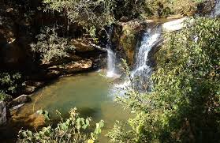

Natureza preservada, tradições seculares e a melhor hospitalidade mineira
Conheça os principais pontos turísticos que fazem de São Gonçalo um destino único

Deslumbre-se com as mais belas cachoeiras da região, com águas cristalinas e fácil acesso para toda família.
Viva a emoção da Cavalhada e a energia do Moto Rock, eventos que unem o passado e o futuro da nossa terra.

Conheça a nossa Apicultura premiada e os produtos artesanais na tradicional Feira na Praça todos os sábados.
Localizada no coração de Minas Gerais, São Gonçalo do Rio Abaixo é um destino que encanta por sua beleza natural, tradições seculares e hospitalidade única.
Com uma rica história ligada à mineração e um presente voltado para o ecoturismo e valorização cultural, a cidade oferece experiências inesquecíveis para todos os tipos de viajantes.

Não perca os principais eventos que movimentam a cidade
Uma das tradições mais antigas da cidade, com desfile de cavaleiros, competições e festa na praça.
Encontro de motociclistas com muito rock, gastronomia e adrenalina. Venha fazer parte!
Produtos artesanais, mel orgânico, quitutes mineiros e artesanato local. Todos os sábados!
Tire suas dúvidas, peça informações ou agende sua aventura
Praça da Matriz, 100 - Centro
São Gonçalo do Rio Abaixo - MG
CEP: 35935-000
(31) 99999-9999
(31) 98888-8888
turismo@saogoncalo.mg.gov.br
contato@turismosg.com